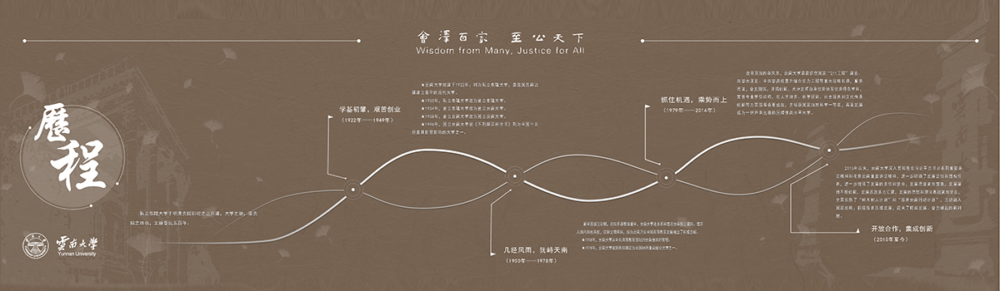

<div class="carousel slide" data-ride="carousel" id="pictures">

  <!-- 指示符 -->
  <ul class="carousel-indicators">
    <li data-target="#demo" data-slide-to="0" class="active"></li>
    <li data-target="#demo" data-slide-to="1"></li>
    <li data-target="#demo" data-slide-to="2"></li>
    <li data-target="#demo" data-slide-to="3"></li>
  </ul>

  <!-- 轮播图片 -->
  <div class="carousel-inner">
    <div class="carousel-item active">
      
      <div class="carousel-caption">
        <!-- <h3>校庆</h3>
        <p>云大校庆</p> -->
      </div>
    </div>
    <div class="carousel-item">
      
      <div class="carousel-caption">
        <!-- <h3>会议现场</h3>
        <p>党委工作动员会</p> -->
      </div>
    </div>
    <div class="carousel-item">
      
      <div class="carousel-caption">
        <!-- <h3>学者论坛</h3>
        <p>东陆学者论坛</p> -->
      </div>
    </div>
    <div class="carousel-item">
      
      <div class="carousel-caption">
        <!-- <h3>云大风光</h3>
        <p>会泽百家，至公天下！</p> -->
      </div>
    </div>
  </div>

  <!-- 左右切换按钮 -->
  <a class="carousel-control-prev" href="#demo" data-slide="prev">
    <span class="carousel-control-prev-icon"></span>
  </a>
  <a class="carousel-control-next" href="#demo" data-slide="next">
    <span class="carousel-control-next-icon"></span>
  </a>

</div>

